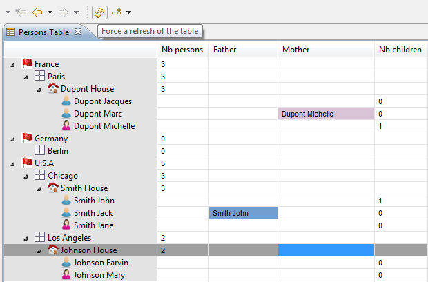
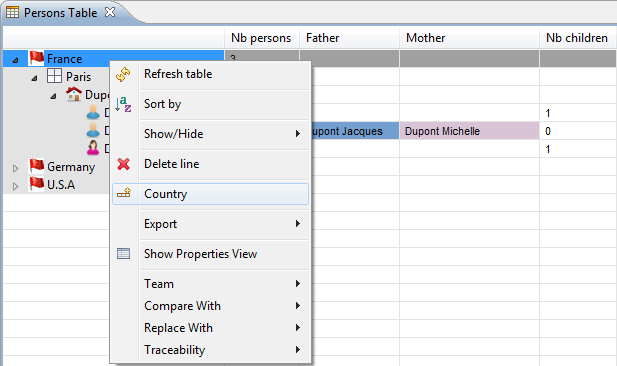
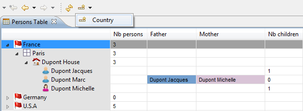
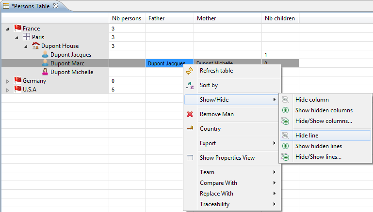
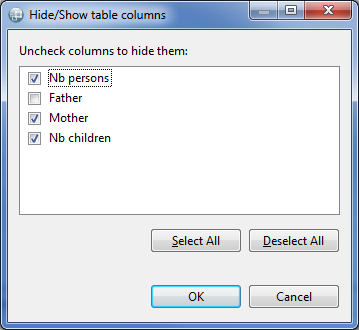
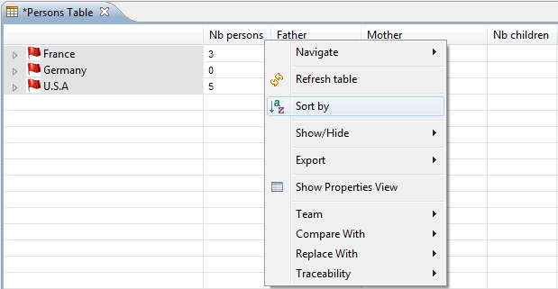
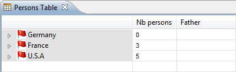
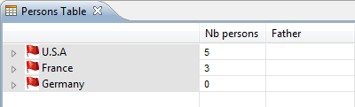
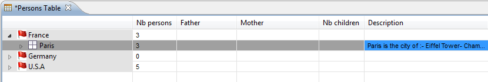

This document explains how to use the two kinds of tabular editors/modelers supported by Sirius: normal edition tables and cross-tables.
Sirius provides support for tabular representations. Tables allow to present information in structured forms. There are two kinds of tables:
Both kinds of tables can also support sub-lines (and sub-sub-lines, etc.), which can be expanded or folded to show/hide some details, and share the same kinds of interactions. Unless otherwise stated, the rest of this document applies to both kinds of tables.
Note that as always with Sirius, some of the features described below may or may not be available with all specific kinds of tables. Some tables are designed to only present information but do not allow edition for example. It all depends on which features the person who specified (configured) the table decided to support.
Tables are managed in the same way as the other kinds or representations supported by Sirius (diagrams, trees...). They are created either through the
New Representation context menu on a semantic element, or through the
Create Representation action on the context menu of a
Modeling Project. Newly created tables are automatically opened. To open an existing table, simply double-click on it in the
Model Explorer: it will appear both inside the representation file (
aird file) and under the semantic element it represents inside the semantic model.
You can rename, duplicate or delete a table by choosing the corresponding action (resp. Rename, Copy or Delete) in the context menu on the table element in the Model Explorer.
Depending on the value of the Automatic refresh Sirius preference (accessible through Window / Preferences... / Sirius), the contents of opened tables may or may not be automatically updated when the underlying semantic model changes. In manual refresh mode (when Automatic refresh is unchecked), you can explicitly request a refresh of the whole table by using the Refresh button in the main Eclipse toolbar, as shown below:
If the table’s configuration has defined tools to create new lines and columns, they will appear in the context menu of table elements. The name of the creation tools depends entirely on the table’s configuration, so it will be different for each tabular modeler. Note that you must have a table element selected for the creation tools to appear in the context menu; the behavior of the tool may depend on the selected element. If the table is completely empty and you have no element to select, you can still create elements (if supported by the table’s configuration) by using the drop-down menus in the main Eclipse toolbar (see screenshot).
Note that both kinds of tables can support line creation, but only cross tables support the creation of new columns.
 You can control the visibility on individual lines and columns using the Show/Hide context menu, available on every table cell.
Selecting a cell and choosing Show/Hide > Hide line will hide the corresponding line. To reveal a hidden line, you can use either Show/Hide > Hide/Show Lines, and select individually which lines should be visible or hidden. You can also use the Show/Hide > Show Hidden Lines, which makes all the hidden lines visible again in one operation.
 The same operations can be performed on column using the corresponding operations in the Show/Hide menu for columns.
Note that the visibility status of lines and columns are persisted: if you save and close a table with lines and/or columns hidden, they will still be hidden when you re-open the table later.
It is possible to change the width of a column by placing the cursor between two column headers and moving the separator. The columns' width is persisted: if you save and close your table, re-opening it later will restore the widths you set.
To sort the lines of a table by the values in a specific column, select one of the cells of the desired column, and in the context menu (right click), select the Sort by column entry. You can also click directly on the column’s header.
The sorting is performed in the lexicographical order of the labels in the sort column. If a table contains sub-lines, the lines are sorted level by level: top-level lines are sorted relative to each other, then direct sub-lines of each line are sorted among themselves, etc.
The initial order of lines (when no sorting is active) is the “intrinsic” order of the elements, as defined by the table’s configuration. When you first activate sorting, lines are sorted in ascending order. If you sort a second time, they are sorted in descending order. Any operation which refreshes the table’s content (a manual refresh or a model change when in automatic refresh mode) resets the lines' ordering to the intrinsic order and disabled any sorting.
| Sorted Ascending | Sorted Descending | Unsorted |
|---|---|---|
|  |  |
This kind of sorting is only available for cross table. It is symmetrical to the “Sort by column” feature, but sorts the columns of a cross table according to the values on a given line.
It is triggered in a similar way, by using the Sort by line item in the context menu on a cell in the cross table, and follows the same cycling rules (first ascending order, then descending if activated twice, and reset by a refresh).
On a cross table, it is possible to combine sorting by line and columns.
When you select a cell in a table, the Properties will contain a tab named Semantic (normally the first one). This tab shows all the properties of all the semantic elements associated to the cell (there may be several elements), and you can edit each property individually. Note that because this tab shows all the raw properties of the semantic elements, it may be dangerous to edit them directly. Depending on how the table was configured, tabs with more user-oriented property sheets may also be available.
Depending on the table’s configuration, it may also be possible to edit elements directly in the cells (this is called direct edit). To activate the edition of a cell, select it and then either:
The editor offered depends on the contents of the cell. It may be:
For combo-boxes, you can start typing the beginning of the value to filter the content of the combo-box.
For check-boxes, you can either click or use the space key to directly change the value of the check-box.
For plain text edition, to facilitate the mass data entry you can begin to directly enter the desired value without first start editing. If the first character typed is alpha-numeric, the text editor will be directly activated. If the property edited with the cell is declared as multi-line, a multi-line text editor is proposed for editing the content of the cell. There is a difference between Windows and Linux for this feature.

Under all systems, to finish the edition of a multi-line text, you need to use Ctrl+Return. Hitting Return will simply add a new line.
A quick outline is available with the shortcut
Ctrl +
O. This allows you to rapidly search text in the displayed name or the contained String attributes of your table elements elements.
The star,
*, is a joker character, allowing you to search with more complicated patterns. Regarding this, an element is found if there is a word in its name or one of its attributes that match with the text in the filter, so if you want to search within words too, add
* at the start of your pattern. Also, you can navigate along the matching elements with
↑ and
↓, and go to the selected element in your editor with
Enter.